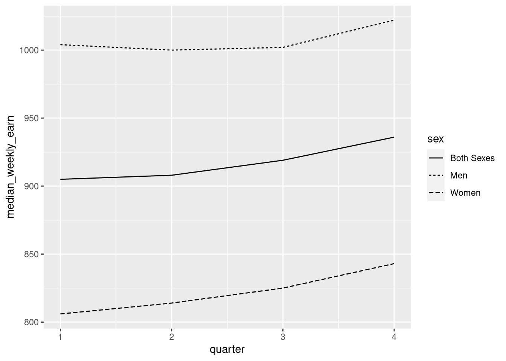
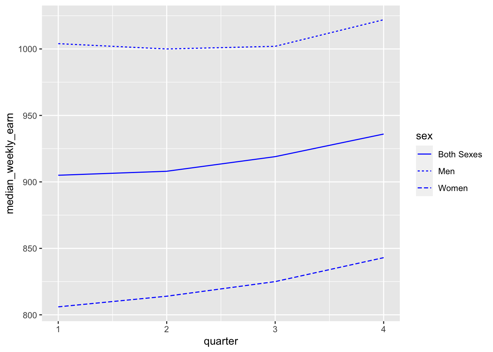
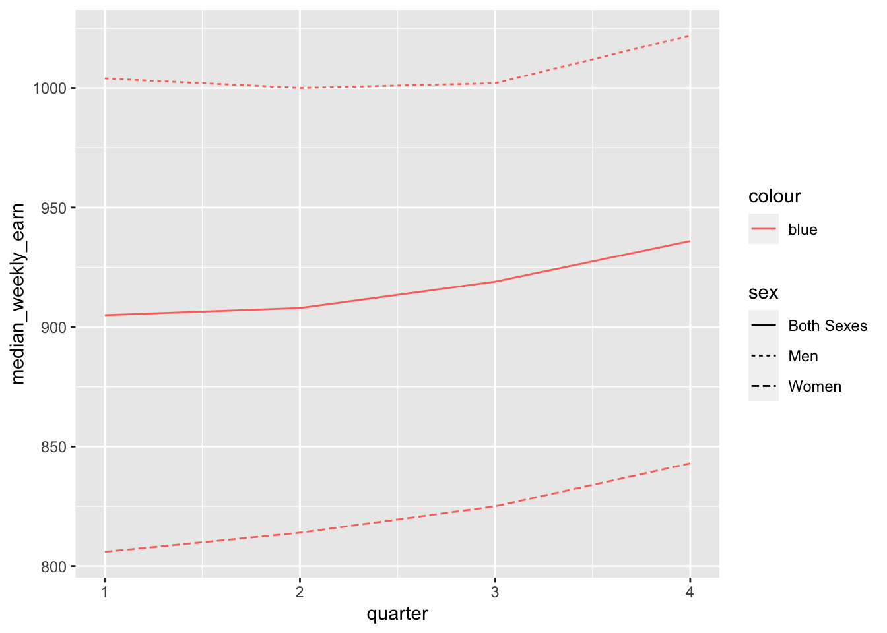
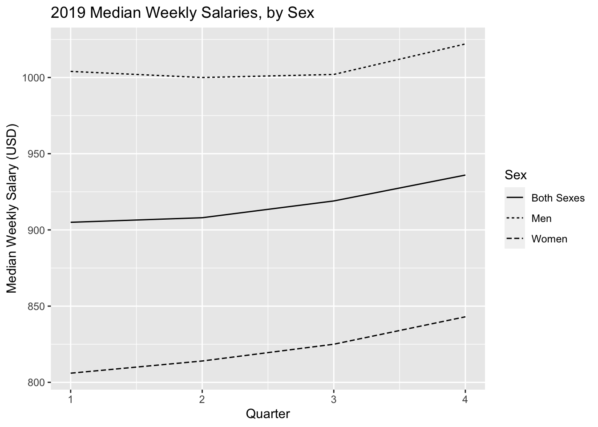
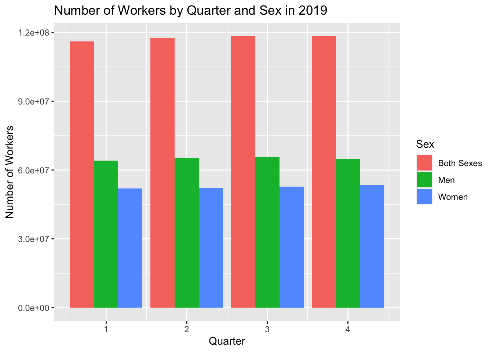

3 Exploring Data
Now that you have a solid foundation in the basic functions and data structures of R, you can move on to its most popular application: data analysis. In this chapter, you’ll learn how to efficiently explore and summarize data with visualizations and statistics. Along the way, you’ll also learn how to use apply functions, which are essential to fluency in R.
3.1 Indexing Data Frames
This section explains how to get and set data in a data frame, expanding on the indexing techniques you learned in Section 2.4. Under the hood, every data frame is a list, so first you’ll learn about indexing lists.
3.1.1 Indexing Lists
Lists are a container for other types of R objects. When you select an
element from a list, you can either keep the container (the list) or discard
it. The indexing operator [ almost always keeps containers.
As an example, let’s get some elements from a small list:
x = list(first = c(1, 2, 3), second = sin, third = c("hi", "hello"))
y = x[c(1, 3)]
y## $first
## [1] 1 2 3
##
## $third
## [1] "hi" "hello"class(y)## [1] "list"The result is still a list. Even if we get just one element, the result of
indexing a list with [ is a list:
class(x[1])## [1] "list"Sometimes this will be exactly what we want. But what if we want to get the
first element of x so that we can use it in a vectorized function? Or in a
function that only accepts numeric arguments? We need to somehow get the
element and discard the container.
The solution to this problem is the extraction operator [[, which is also
called the double square bracket operator. The extraction operator is the
primary way to get and set elements of lists and other containers.
Unlike the indexing operator [, the extraction operator always discards the
container:
x[[1]]## [1] 1 2 3class(x[[1]])## [1] "numeric"The tradeoff is that the extraction operator can only get or set one element at a time. Note that the element can be a vector, as above. Because it can only get or set one element at a time, the extraction operator can only index by position or name. Blank and logical indexes are not allowed.
The final difference between the index operator [ and the extraction operator
[[ has to do with how they handle invalid indexes. The index operator [
returns NA for invalid vector elements, and NULL for invalid list elements:
c(1, 2)[10]## [1] NAx[10]## $<NA>
## NULLOn the other hand, the extraction operator [[ raises an error for invalid
elements:
x[[10]]## Error in x[[10]]: subscript out of boundsThe indexing operator [ and the extraction operator [[ both work with any
data structure that has elements. However, you’ll generally use the indexing
operator [ to index vectors, and the extraction operator [[ to index
containers (such as lists).
3.1.2 Two-dimensional Indexing
For two-dimensional objects, like matrices and data frames, you can pass the
indexing operator [ or the extraction operator [[ a separate index for each
dimension. The rows come first:
DATA[ROWS, COLUMNS]For instance, let’s get the first 3 rows and all columns of the earnings data:
earn[1:3, ]## sex race ethnic_origin age year quarter n_persons
## 1 Both Sexes All Races All Origins 16 years and over 2010 1 96821000
## 2 Both Sexes All Races All Origins 16 years and over 2010 2 99798000
## 3 Both Sexes All Races All Origins 16 years and over 2010 3 101385000
## median_weekly_earn
## 1 754
## 2 740
## 3 740As we saw in Section 2.4.1, leaving an index blank means all elements.
As another example, let’s get the 3rd and 5th row, and the 2nd and 4th column:
earn[c(3, 5), c(2, 4)]## race age
## 3 All Races 16 years and over
## 5 All Races 16 years and overMixing several different ways of indexing is allowed. So for example, we can get the same above, but use column names instead of positions:
earn[c(3, 5), c("race", "age")]## race age
## 3 All Races 16 years and over
## 5 All Races 16 years and overFor data frames, it’s especially common to index the rows by condition and the
columns by name. For instance, let’s get the sex, age, and n_persons
columns for all rows that pertain to women:
result = earn[earn$sex == "Women", c("sex", "age", "n_persons")]
head(result)## sex age n_persons
## 89 Women 16 years and over 43794000
## 90 Women 16 years and over 44562000
## 91 Women 16 years and over 44912000
## 92 Women 16 years and over 44620000
## 93 Women 16 years and over 44077000
## 94 Women 16 years and over 445390003.1.3 The drop Parameter
If you use two-dimensional indexing with [ to select exactly one column, you
get a vector:
result = earn[1:3, 2]
class(result)## [1] "character"The container is dropped, even though the indexing operator [ usually keeps
containers. This also occurs for matrices. You can control this behavior with
the drop parameter:
result = earn[1:3, 2, drop = FALSE]
class(result)## [1] "data.frame"The default is drop = TRUE.
3.2 Packages
A package is a collection of functions for use in R. Packages usually include documentation, and can also contain examples, vignettes, and data sets. Most packages are developed by members of the R community, so quality varies. There are also a few packages that are built into R but provide extra features. We’ll use a package in Section 3.3, so we’re learning about them now.
The Comprehensive R Archive Network, or CRAN, is the main place people publish packages. As of writing, there were 18,619 packages posted to CRAN. This number has been steadily increasing as R has grown in popularity.
Packages span a wide variety of topics and disciplines. There are packages related to statistics, social sciences, geography, genetics, physics, biology, pharmacology, economics, agriculture, and more. The best way to find packages is to search online, but the CRAN website also provides “task views” if you want to browse popular packages related to a specific discipline.
The install.packages function installs one or more packages from CRAN. Its
first argument is the packages to install, as a character vector.
When you run install.packages, R will ask you to choose which mirror to
download the package from. A mirror is a web server that has the same set of
files as some other server. Mirrors are used to make downloads faster and to
provide redundancy so that if a server stops working, files are still available
somewhere else. CRAN has dozens of mirrors; you should choose one that’s
geographically nearby, since that usually produces the best download speeds. If
you aren’t sure which mirror to choose, you can use the 0-Cloud mirror, which
attempts to automatically choose a mirror near you.
As an example, here’s the code to install the remotes package:
install.packages("remotes")If you run the code above, you’ll be asked to select a mirror, and then see output that looks something like this:
--- Please select a CRAN mirror for use in this session ---
trying URL 'https://cloud.r-project.org/src/contrib/remotes_2.3.0.tar.gz'
Content type 'application/x-gzip' length 148405 bytes (144 KB)
==================================================
downloaded 144 KB
* installing *source* package ‘remotes’ ...
** package ‘remotes’ successfully unpacked and MD5 sums checked
** using staged installation
** R
** inst
** byte-compile and prepare package for lazy loading
** help
*** installing help indices
** building package indices
** installing vignettes
** testing if installed package can be loaded from temporary location
** testing if installed package can be loaded from final location
** testing if installed package keeps a record of temporary installation path
* DONE (remotes)
The downloaded source packages are in
‘/tmp/Rtmp8t6iGa/downloaded_packages’R goes through a variety of steps to install a package, even installing other
packages that the package depends on. You can tell that a package installation
succeeded by the final line DONE. When a package installation fails, R prints
an error message explaining the problem instead.
Once a package is installed, it stays on your computer until you remove it or
remove R. This means you only need to install each package once. However, most
packages are periodically updated. You can reinstall a package using
install.packages the same way as above to get the latest version.
Alternatively, you can update all of the R packages you have installed at once
by calling the update.packages function. Beware that this may take a long
time if you have a lot of packages installed.
The function to remove packages is remove.packages. Like install.packages,
this function’s first argument is the packages to remove, as a character
vector.
If you want to see which packages are installed, you can use the
installed.packages function. It does not require any arguments. It returns a
matrix with one row for each package and columns that contain a variety of
information. Here’s an example:
packages = installed.packages()
# Just print the version numbers for 10 packages.
packages[1:10, "Version"]## base64enc bookdown bslib cachem cli colorspace cpp11
## "0.1-3" "0.29" "0.4.0" "1.0.6" "3.4.0" "2.0-3" "0.4.2"
## digest evaluate fansi
## "0.6.29" "0.16" "1.0.3"You’ll see a different set of packages, since you have a different computer.
Before you can use the functions (or other resources) in an installed package,
you must load the package with the library function. R doesn’t load packages
automatically because each package you load uses memory and may conflict with
other packages. Thus you should only load the packages you need for whatever
it is that you want to do. When you restart R, the loaded packages are cleared
and you must again load any packages you want to use.
Let’s load the remotes package we installed earlier:
library("remotes")The library function works with or without quotes around the package name, so
you may also see people write things like library(remotes). We recommend
using quotes to make it unambiguous that you are not referring to a variable.
A handful of packages print out a message when loaded, but the vast majority do
not. Thus you can assume the call to library was successful if nothing is
printed. If something goes wrong while loading a package, R will print out an
error message explaining the problem.
Finally, not all R packages are published to CRAN. GitHub is another popular place to publish R packages, especially ones that are experimental or still in development. Unlike CRAN, GitHub is a general-purpose website for publishing code written in any programming language, so it contains much more than just R packages and is not specifically R-focused.
The remotes package that we just installed and loaded provides functions to install packages from GitHub. It is generally better to install packages from CRAN when they are available there, since the versions on CRAN tend to be more stable and intended for a wide audience. However, if you want to install a package from GitHub, you can learn more about the remotes package by reading its online documentation.
3.3 Data Visualization
There are three popular systems for creating visualizations in R:
- The base R functions (primarily the
plotfunction) - The lattice package
- The ggplot2 package
These three systems are not interoperable! Consequently, it’s best to choose one to use exclusively. Compared to base R, both lattice and ggplot2 are better at handling grouped data and generally require less code to create a nice-looking visualization.
The ggplot2 package is so popular that there are now knockoff packages for other data-science-oriented programming languages like Python and Julia. The package is also part of the Tidyverse, a popular collection of R packages designed to work well together. Because of these advantages, we’ll use ggplot2 for visualizations in this and all future lessons.
ggplot2 has detailed documentation and also a cheatsheet.
The “gg” in ggplot2 stands for grammar of graphics. The idea of a grammar of graphics is that visualizations can be built up in layers. In ggplot2, the three layers every plot must have are:
- Data
- Geometry
- Aesthetics
There are also several optional layers. Here are a few:
| Layer | Description |
|---|---|
| scales | Title, label, and axis value settings |
| facets | Side-by-side plots |
| guides | Axis and legend position settings |
| annotations | Shapes that are not mapped to data |
| coordinates | Coordinate systems (Cartesian, logarithmic, polar) |
As an example, let’s plot the earnings data. First, we need to load ggplot2. As always, if this is your first time using the package, you’ll have to install it. Then you can load the package:
# install.packages("ggplot2")
library("ggplot2")What kind of plot should we make? It depends on what data we want the plot to show. Let’s make a line plot that shows median earnings for each quarter in 2019, with separate lines for men and women.
Before plotting, we need to take a subset of the earnings that only contains information for 2019:
earn19 = earn[earn$year == 2019, ]The data is also broken down across race, ethnic_origin, and age. Since
we aren’t interested in these categories for the plot, we need to further
subset the data:
earn19 = earn19[earn19$race == "All Races" &
earn19$ethnic_origin == "All Origins" &
earn19$age == "16 years and over", ]Now we’re ready to make the plot.
3.3.1 Layer 1: Data
The data layer determines the data set used to make the plot. ggplot and most other Tidyverse packages are designed for working with tidy data frames. Tidy means:
- Each observation has its own row.
- Each feature has its own column.
- Each value has its own cell.
Tidy data sets are convenient in general. A later lesson will cover how to make an untidy data set tidy. Until then, we’ll take it for granted that the data sets we work with are tidy.
To set up the data layer, call the ggplot function on a data frame:
ggplot(earn19)
This returns a blank plot. We still need to add a few more layers.
3.3.2 Layer 2: Geometry
The geometry layer determines the shape or appearance of the visual elements of the plot. In other words, the geometry layer determines what kind of plot to make: one with points, lines, boxes, or something else.
There are many different geometries available in ggplot2. The package provides
a function for each geometry, always prefixed with geom_.
To add a geometry layer to the plot, choose the geom_ function you want and
add it to the plot with the + operator:
ggplot(earn19) + geom_line()## Error in `check_required_aesthetics()`:
## ! geom_line requires the following missing aesthetics: x and yThis returns an error message that we’re missing aesthetics x and y. We’ll
learn more about aesthetics in the next section, but this error message is
especially helpful: it tells us exactly what we’re missing. When you use a
geometry you’re unfamiliar with, it can be helpful to run the code for just the
data and geometry layer like this, to see exactly which aesthetics need to be
set.
As we’ll see later, it’s possible to add multiple geometries to a plot.
3.3.3 Layer 3: Aesthetics
The aesthetic layer determines the relationship between the data and the geometry. Use the aesthetic layer to map features in the data to aesthetics (visual elements) of the geometry.
The aes function creates an aesthetic layer. The syntax is:
aes(AESTHETIC = FEATURE, ...)The names of the aesthetics depend on the geometry, but some common ones are
x, y, color, fill, shape, and size. There is more information about
and examples of aesthetic names in the documentation.
For example, we want to put quarter on the x-axis and median_weekly_earn on
the y-axis. We also want to use a separate line style for each sex category.
So the aesthetic layer should be:
aes(x = quarter, y = median_weekly_earn, linetype = sex)In the aes function, column names are never quoted.
Unlike most layers, the aesthetic layer is not added to the plot with the +
operator. Instead, you can pass the aesthetic layer as the second argument to
the ggplot function:
ggplot(earn19, aes(x = quarter, y = median_weekly_earn, linetype = sex)) +
geom_line()
If you want to set an aesthetic to a constant value, rather than one that’s data dependent, do so outside of the aesthetic layer. For instance, suppose we want to make the lines blue:
ggplot(earn19, aes(x = quarter, y = median_weekly_earn, linetype = sex)) +
geom_line(color = "blue")
If you set an aesthetic to a constant value inside of the aesthetic layer, the results you get might not be what you expect:
ggplot(earn19, aes(x = quarter, y = median_weekly_earn, linetype = sex,
color = "blue")) + geom_line()
3.3.4 Layer 4: Scales
The scales layer controls the title, axis labels, and axis scales of the plot.
Most of the functions in the scales layer are prefixed with scale_, but not
all of them.
The labs function is especially important, because it’s used to set the title
and axis labels:
ggplot(earn19, aes(x = quarter, y = median_weekly_earn, linetype = sex)) +
geom_line() + labs(x = "Quarter", y = "Median Weekly Salary (USD)",
title = "2019 Median Weekly Salaries, by Sex", linetype = "Sex")
3.3.5 Saving Plots
In ggplot2, use the ggsave function to save the most recent plot you created:
ggsave("line.png")The file format is selected automatically based on the extension. Common formats are PNG and PDF.
The Plot Device
You can also save a plot with one of R’s “plot device” functions. The steps are:
- Call a plot device function:
png,jpeg,pdf,bmp,tiff, orsvg. - Run your code to make the plot.
- Call
dev.offto indicate that you’re done plotting.
This strategy works with any of R’s graphics systems (not just ggplot2).
Here’s an example:
# Run these lines in the console, not the notebook!
jpeg("line.jpeg")
ggplot(favs, aes(x = distance_mi, y = walk_min)) + geom_point()
dev.off()3.3.6 Example: Bar Plot
Let’s say we want to plot the number of persons for each sex, again using the earnings data set. A bar plot is an appropriate way to represent this visually.
The geometry for a bar plot is geom_bar. Since bar plots are mainly used to
display frequencies, the geom_bar function automatically computes frequencies
when given mapped to a categorical feature.
The n_persons feature is not categorical, so we don’t need geom_bar to
compute frequencies. To prevent geom_bar from computing frequencies
automatically, set stat = "identity".
Here’s the code to make the bar plot:
ggplot(earn19, aes(x = quarter, y = n_persons, fill = sex)) +
geom_bar(stat = "identity", position = "dodge") +
labs(x = "Quarter", y = "Number of Workers", fill = "Sex",
title = "Number of Workers by Quarter and Sex in 2019")
The setting position = "dodge" instructs geom_bar to put the bars
side-by-side rather than stacking them.
3.3.7 Visualization Design
Designing high-quality visualizations goes beyond just mastering which R functions to call. You also need to think carefully about what kind of data you have and what message you want to convey. This section provides a few guidelines.
The first step in data visualization is choosing an appropriate kind of plot. Here are some suggestions (not rules):
| Feature 1 | Feature 2 | Plot |
|---|---|---|
| categorical | bar, dot | |
| categorical | categorical | bar, dot, mosaic |
| numerical | box, density, histogram | |
| numerical | categorical | box, density, ridge |
| numerical | numerical | line, scatter, smooth scatter |
If you want to add a:
- 3rd numerical feature, use it to change point/line sizes.
- 3rd categorical feature, use it to change point/line styles.
- 4th categorical feature, use side-by-side plots.
Once you’ve selected a plot, here are some rules you should almost always follow:
Always add a title and axis labels. These should be in plain English, not variable names!
Specify units after the axis label if the axis has units. For instance, “Height (ft)”.
Don’t forget that many people are colorblind! Also, plots are often printed in black and white. Use point and line styles to distinguish groups; color is optional.
Add a legend whenever you’ve used more than one point or line style.
Always write a few sentences explaining what the plot reveals. Don’t describe the plot, because the reader can just look at it. Instead, explain what they can learn from the plot and point out important details that are easily overlooked.
Sometimes points get plotted on top of each other. This is called overplotting. Plots with a lot of overplotting can be hard to read and can even misrepresent the data by hiding how many points are present. Use a two-dimensional density plot or jitter the points to deal with overplotting.
For side-by-side plots, use the same axis scales for both plots so that comparing them is not deceptive.
Visualization design is a deep topic, and whole books have been written about it. One resource where you can learn more is DataLab’s Principles of Data Visualization Workshop Reader.
3.4 Apply Functions
Section 2.1.3 introduced vectorization, a convenient and efficient way to compute multiple results. That section also mentioned that some of R’s functions—the ones that summarize or aggregate data—are not vectorized.
The class function is an example of a function that’s not vectorized. If we
call the class function on the earnings data set, we get just one result for
the data set as a whole:
class(earn)## [1] "data.frame"What if we want to get the class of each column? We can get the class for a
single column by selecting the column with $, the dollar sign operator:
class(earn$age)## [1] "character"But what if we want the classes for all the columns? We could write a call to
class for each column, but that would be tedious. When you’re working with a
programming language, you should try to avoid tedium; there’s usually a better,
more automated way.
Section 2.2.1 pointed out that data frames are technically lists, where
each column is one element. With that in mind, what we need here is a line of
code that calls class on each element of the data frame. The idea is similar
to vectorization, but since we have a list and a non-vectorized function, we
have to do a bit more than just call class(earn).
The lapply function calls, or applies, a function on each element of a list
or vector. The syntax is:
lapply(X, FUN, ...)The function FUN is called once for each element of X, with the element as
the first argument. The ... is for additional arguments to FUN, which are
held constant across all the elements.
Let’s try this out with the earnings data and the class function:
lapply(earn, class)## $sex
## [1] "character"
##
## $race
## [1] "character"
##
## $ethnic_origin
## [1] "character"
##
## $age
## [1] "character"
##
## $year
## [1] "integer"
##
## $quarter
## [1] "integer"
##
## $n_persons
## [1] "integer"
##
## $median_weekly_earn
## [1] "integer"The result is similar to if the class function was vectorized. In fact, if we
use a vector and a vectorized function with lapply, the result is nearly
identical to the result from vectorization:
x = c(1, 2, pi)
sin(x)## [1] 8.414710e-01 9.092974e-01 1.224647e-16lapply(x, sin)## [[1]]
## [1] 0.841471
##
## [[2]]
## [1] 0.9092974
##
## [[3]]
## [1] 1.224647e-16The only difference is that the result from lapply is a list. In fact, the
lapply function always returns a list with one element for each element of
the input data. The “l” in lapply stands for “list”.
The lapply function is one member of a family of functions called apply
functions. All of the apply functions provide ways to apply a function
repeatedly to different parts of a data structure. We’ll meet a few more apply
functions soon.
When you have a choice between using vectorization or an apply function, you should always choose vectorization. Vectorization is clearer—compare the two lines of code above—and it’s also significantly more efficient. In fact, vectorization is the most efficient way to call a function repeatedly in R.
As we saw with the class function, there are some situations where
vectorization is not possible. That’s when you should think about using an
apply function.
3.4.1 The sapply Function
The related sapply function calls a function on each element of a list or
vector, and simplifies the result. That last part is the crucial difference
compared to lapply. When results from the calls all have the same type and
length, sapply returns a vector or matrix instead of a list. When the results
have different types or lengths, the result is the same as for lapply. The
“s” in sapply stands for “simplify”.
For instance, if we use sapply to find the classes of the columns in the
earnings data, we get a character vector:
sapply(earn, class)## sex race ethnic_origin age
## "character" "character" "character" "character"
## year quarter n_persons median_weekly_earn
## "integer" "integer" "integer" "integer"Likewise, if we use sapply to compute the sin values, we get a numeric
vector, the same as from vectorization:
sapply(x, sin)## [1] 8.414710e-01 9.092974e-01 1.224647e-16In spite of that, vectorization is still more efficient than sapply, so use
vectorization instead when possible.
Apply functions are incredibly useful for summarizing data. For example, suppose we want to compute the frequencies for all of the columns in the earnings data set that aren’t numeric.
First, we need to identify the columns. One way to do this is with the
is.numeric function. Despite the name, this function actually tests whether
its argument is a real number, not whether it its argument is a numeric vector.
In other words, it also returns true for integer values. We can use sapply to
apply this function to all of the columns in the earnings data set:
is_not_number = !sapply(earn, is.numeric)
is_not_number## sex race ethnic_origin age
## TRUE TRUE TRUE TRUE
## year quarter n_persons median_weekly_earn
## FALSE FALSE FALSE FALSEIs it worth using R code to identify the non-numeric columns? Since there are only 8 columns in the earnings data set, maybe not. But if the data set was larger, with say 100 columns, it definitely would be.
In general, it’s a good habit to use R to do things rather than do them manually. You’ll get more practice programming, and your code will be more flexible if you want to adapt it to other data sets.
Now that we know which columns are non-numeric, we can use the table function
to compute frequencies. We only want to compute frequencies for those columns,
so we need to subset the data:
lapply(earn[, is_not_number], table)## $sex
##
## Both Sexes Men Women
## 1408 1408 1408
##
## $race
##
## All Races Asian Black or African American
## 2244 660 660
## White
## 660
##
## $ethnic_origin
##
## All Origins Hispanic or Latino
## 3564 660
##
## $age
##
## 16 to 19 years 16 to 24 years 16 years and over 20 to 24 years
## 132 660 660 132
## 25 to 34 years 25 to 54 years 25 years and over 35 to 44 years
## 132 660 660 132
## 45 to 54 years 55 to 64 years 55 years and over 65 years and over
## 132 132 660 132We use lapply rather than sapply for this step because the table for each
column will have a different length (but try sapply and see what happens!).
3.4.2 The Split-Apply Pattern
In a data set with categorical features, it’s often useful to compute something
for each category. The lapply and sapply functions can compute something
for each element of a data structure, but categories are not necessarily
elements.
For example, the earnings data set has three different categories in the sex
column. If we want all of the rows in one category, one way to get them is by
indexing:
women = earn[earn$sex == "Women", ]
head(women)## sex race ethnic_origin age year quarter n_persons
## 89 Women All Races All Origins 16 years and over 2010 1 43794000
## 90 Women All Races All Origins 16 years and over 2010 2 44562000
## 91 Women All Races All Origins 16 years and over 2010 3 44912000
## 92 Women All Races All Origins 16 years and over 2010 4 44620000
## 93 Women All Races All Origins 16 years and over 2011 1 44077000
## 94 Women All Races All Origins 16 years and over 2011 2 44539000
## median_weekly_earn
## 89 665
## 90 672
## 91 662
## 92 679
## 93 683
## 94 689To get all three categories, we’d have to do this three times. If we want to
compute something for each category, say the mean of the n_persons column, we
also have to repeat that computation three times. Here’s what it would look
like for just the women category:
mean(women$n_persons)## [1] 10758771If the categories were elements, we could avoid writing code to index each
category, and just use the sapply (or lapply) function to apply the mean
function to each.
The split function splits a vector or data frame into groups based on a
vector of categories. The first argument to split is the data, and the
second argument is a congruent vector of categories.
We can use split to elegantly compute means of n_persons broken down by
sex. First, we split the data by category. Since we only want to compute on the
n_persons column, we only split that column:
by_sex = split(earn$n_persons, earn$sex)
class(by_sex)## [1] "list"names(by_sex)## [1] "Both Sexes" "Men" "Women"The result from split is a list with one element for each category. The
individual elements contain pieces of the original n_persons column:
head(by_sex$Women)## [1] 43794000 44562000 44912000 44620000 44077000 44539000Since the categories are elements in the split data, now we can use sapply
the same way we did in previous examples:
sapply(by_sex, mean)## Both Sexes Men Women
## 24402515 13643727 10758771This two-step process is an R idiom called the split-apply pattern. First you
use split to convert categories into list elements, then you use an apply
function to compute something on each category. Any time you want to compute
results by category, you should think of this pattern.
The split-apply pattern is so useful that R provides the tapply function as a
shortcut. The tapply function is equivalent to calling split and then
sapply. Like split, the first argument is the data and the second argument
is a congruent vector of categories. The third argument is a function to apply,
like the function argument in sapply.
We can use tapply to compute the n_persons means by sex for the earnings
data:
tapply(earn$n_persons, earn$sex, mean)## Both Sexes Men Women
## 24402515 13643727 10758771Notice that the result is identical to the one we computed before.
The “t” in tapply stands for “table”, because the tapply function is a
generalization of the table function. If you use length as the third
argument to tapply, you get the same results as you would from using the
table function on the category vector.
The aggregate function is closely related to tapply. It computes the same
results, but organizes them into a data frame with one row for each category.
In some cases, this format is more convenient. The arguments are the same,
except that the second argument must be a list or data frame rather than a
vector.
As an example, here’s the result of using aggregate to compute the
n_persons means:
aggregate(earn$n_persons, list(earn$sex), mean)## Group.1 x
## 1 Both Sexes 24402515
## 2 Men 13643727
## 3 Women 10758771The lapply, sapply, and tapply functions are the three most important
functions in the family of apply functions, but there are many more. You can
learn more about all of R’s apply functions by reading this StackOverflow
post.